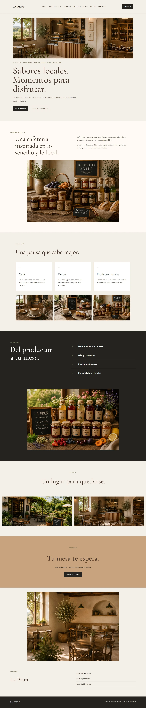

ÉTUDE DE CAS · 02
La Prun
Identité de marque · Création web · Commerce local
2026
LE PROJET
Construire une présence digitale claire et professionnelle.
LA PRUN est un concept de café et de boutique de produits locaux, conçu pour associer tradition, proximité et expérience contemporaine.
L’objectif était de développer une identité visuelle chaleureuse et reconnaissable, accompagnée d’une présence digitale claire reflétant le caractère artisanal du projet et facilitant le contact avec ses clients.
DIRECTION VISUELLE
Une identité chaleureuse, naturelle et accessible.
La direction visuelle de La Prun s’inspire de la nature, des produits artisanaux et de la vie locale, en associant des tons chaleureux et des éléments simples pour transmettre proximité, authenticité et qualité.
IDENTITÉ
Marque
Développement du concept visuel de Digital Ukhti et création d’une identité adaptée aux supports digitaux.
Palette
Une combinaison de tons naturels et chaleureux pour transmettre l’authenticité, la proximité et le caractère artisanal de La Prun.
Typographie
Une sélection typographique simple et contemporaine qui apporte de la personnalité à la marque et conserve une lecture claire sur tous les formats.

SYSTÈME VISUEL
Une palette inspirée de la terre, de la nature et de l’artisanat.
#25231F
#F4EFE6
#C9A27E
#7C8060
LA PRUN
Café · Produits locaux · Expérience authentiqueTYPOGRAPHIE
L’équilibre entre tradition et simplicité.
Cormorant Garamond
Titres · Phrases mises en valeur · Identité de marque
Inter
Navigation · Textes · Boutons · Informations
CRÉATION WEB
Conçue pour présenter simplement les produits et les expériences.
Le site a été conçu avec une structure claire, une navigation simple et un design responsive.
La priorité était de permettre au visiteur de découvrir facilement le café, les produits locaux et l’offre de La Prun, tout en conservant une expérience accessible et cohérente avec la marque.
EXPÉRIENCE DIGITALE
Une expérience conçue pour être claire sur chaque écran.
Navigation claire
Une structure simple et intuitive qui permet de trouver rapidement chaque partie du projet et d’accéder au contenu en quelques étapes.
Design responsive
Une expérience optimisée pour ordinateur, tablette et mobile, qui conserve la lisibilité, la hiérarchie visuelle et une navigation agréable sur chaque écran.
Identité cohérente
La typographie, les couleurs, les espaces et la composition forment un système visuel unique pour conserver une image professionnelle et reconnaissable sur l’ensemble du site.
DÉVELOPPEMENT
Structure
Développement d’une structure sémantique claire, prête à accueillir de futures évolutions.
Design
Des styles personnalisés et un système visuel cohérent pour les ordinateurs et les appareils mobiles.
Adaptation
Un design optimisé pour une expérience cohérente sur ordinateur, tablette et mobile.
RÉSULTAT
Une base digitale prête à se développer.
Le résultat est une identité cohérente et un site simple, flexible et professionnel, prêt à accueillir de nouveaux services, projets et contenus.
Retour au portfolio